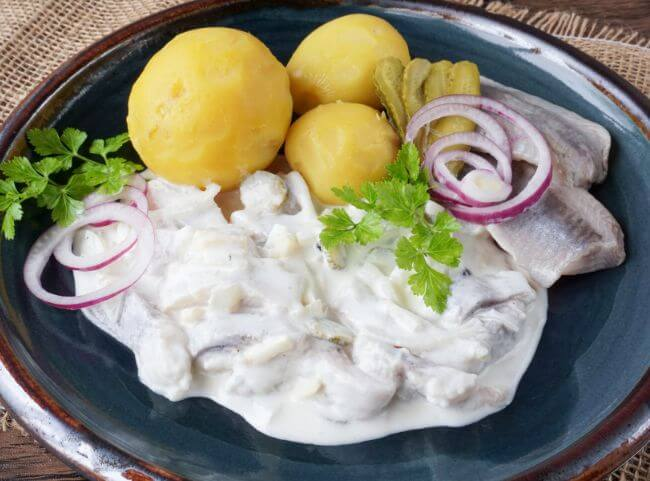

Marinierter Hering

Zutaten für 4 Portionen
- 2 Pck. Salzhering(e) (Matjes)
- 5 Gewürzgurke(n)
- 1 Zwiebel(n)
- 1 Apfel
- 2,5 Becher saure Sahne
- 1,3 Becher Schmand
- etwas Milch
- Pfeffer
- 8 Körner Piment
- 1 Lorbeerblatt
Zubereitung
|
|
Arbeitszeit ca. 15 Minuten |
|
|
Ruhezeit ca. 10 Stunden |
|
|
Gesamtzeit ca. 10 Stunden 15 Minuten |
- Die Matjesheringe abtropfen lassen und in mundgerechte Stücke schneiden.
- Gewürzgurken, Zwiebel und Apfel klein schneiden und alles in eine Schüssel geben.
- In einem extra Behälter die saure Sahne mit dem Schmand verrühren, mit etwas Milch verdünnen.
- Mit Pfeffer würzen und über die Salatzutaten gießen.
- Pimentkörner und Lorbeerblatt hineingeben und alles ziehen lassen.
- Am besten am Vorabend zubereiten, denn der Fisch muss gut durchziehen.
- Mit Pellkartoffeln servieren.